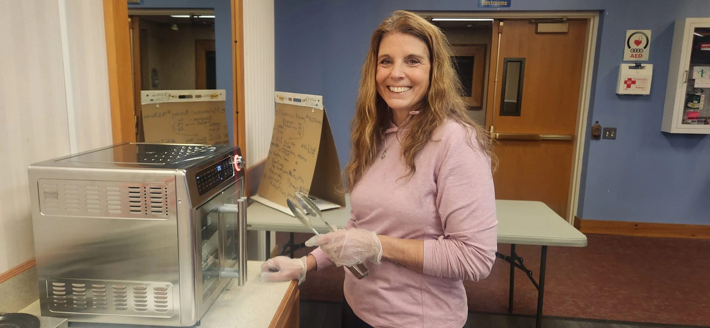
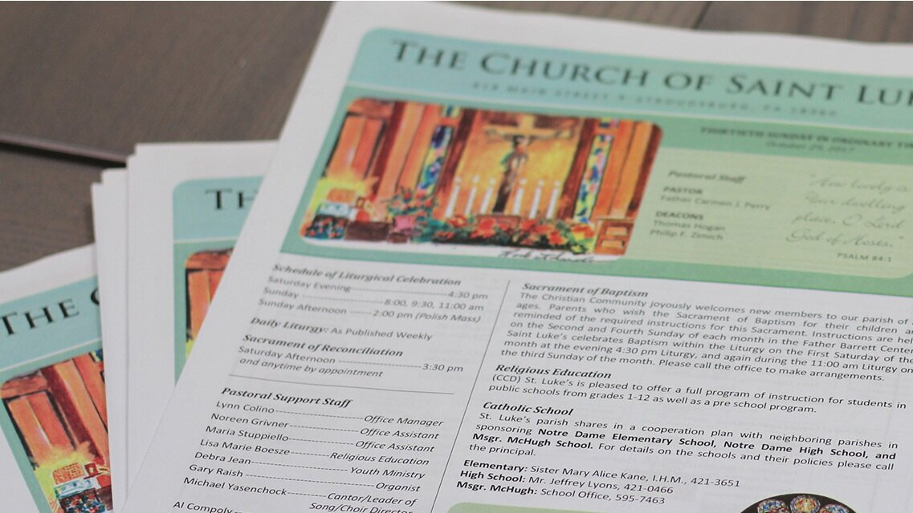

Events
Living Stations of the Cross 2025
April 14, 2025
Students brought the Passion of Christ to life on the streets of Stroudsburg.
Read More →Stay up to date with parish life
April 14, 2025
Students brought the Passion of Christ to life on the streets of Stroudsburg.
Read More →
April 2025
Saint Luke welcomed our Muslim neighbors for an evening of prayer and shared meals.
Read More →
March 2025
Join our annual 40 Cans for 40 Days food drive benefiting local families.
Read More →
January 2026
Welcoming the new members of our Parish Pastoral Council.
Read More →
March 2025
Highlights and upcoming events from our parish community.
Read More →
October 2023
Support the Diocese of Scranton's annual Catholic Ministries Appeal.
Read More →
Download this week's bulletin or browse our complete archive of parish bulletins. Stay informed about Mass times, upcoming events, and important parish announcements.

April 14, 2025 – Download and review this week's announcements and news